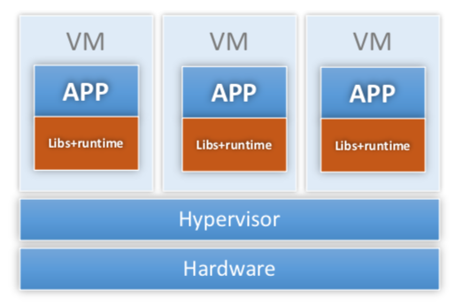
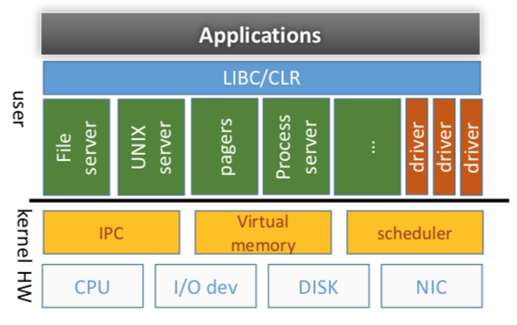
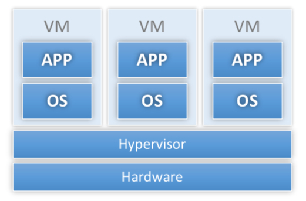
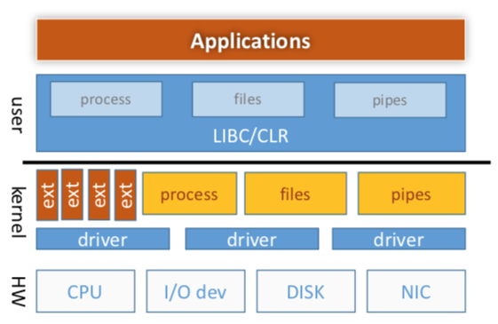
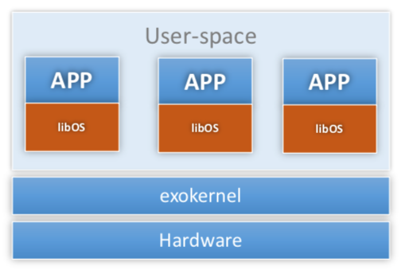
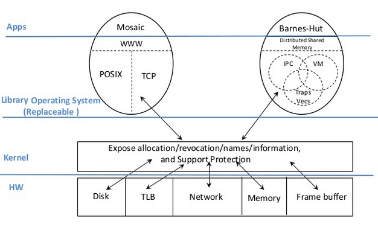

"Exokernel: An Operating System Architecture for Application-Level Resource Management"
Problem
How can we design an OS such that it improves performance of standard applications while providing flexibility to enable applications to customize resource management to improve performance?
Approach
- extensibility: application knows best what resource mangement it needs. Therefore, it should make decisions whenever possible (end-to-end argument)
- minimalist: kernel's job is to protect resources, not to manage them ("separate protection from resource management")
- challenge: identify core of the abstractions for different resources
- Thin kernel, fat OS libraries
Background: extensibility
There are five approaches to extensibility (including Exokernel):
OS per application

-
Example: Fluke
-
Idea:
- Hypervisor provides resource management and isolation
- Additional guest-OS layers redundant and unnecessary
- Collapse guest OS and application into same domain (typically compiles OS and app into the same binary)
-
Pros:
- Fast (same advantage provides by Unikernel)
-
Cons:
- Co-existence applications
- Kernels are fragile and hard to modify
Microkernels

-
Idea:
- Minimal OS core to manage hardware
- Higher level abstractions in user space
- IPC fundamental cross-domain primitive
-
Pros:
- Fault isolation
- Better extensibility
-
Cons:
- Slow (kernel crossings)
- Limited extensibility (maky make it easeir for OS developer to extend, but not user)
Virtual machines

-
Examples: VM370, Disco, VMware, Xen
-
Ideas:
- Different apps need different OSes
- Figure our how to run more than one OS at a time
-
Pros:
- low-level interface ("ideal" according to Exokernel standard)
-
Cons:
- "emulate" machine vs. "export" resources (e.g., need to emulate "privileged" instructions)
- Poor IPC (traditionally): machines isolated
- Hide resource management
Download untrusted code into kernel

-
Ideas:
- OS provides extensibility interfaces
- Apps provide extensions that execute in kernel mode
-
Pros:
- extension
-
Cons:
- Still working with same OS structure
- Only extensible within limits of extensbility API
- New thicket of isolation and trust issues
System designs
High-level Architecture
Like previous four types of system, exokernel is another system architecture style focusing on the system extensibility.


-
Top level structure:
-
A small monolithic kernel
- low-level, fixed interface
- Ideally hardware interface
- few and simple abstractions
- extension types: resource state data (page table entries), specialized resource management modules
-
Libraries of untrusted resource management routines
- VM replacement
- File System
- IPC
- ...
-
Note
Libraries are part of OS. Historically, OS was set of libraries for math, etc. However, it is not true today.
-
Key difference - trust: application can write over library, jump to bad address in library, etc. Thus, kernel cannot trust library.
-
Exokernel borrows liberally from other approaches:
- Like Fluke: make it easy for each app to have custom OS
-
Like virtual machine: exokernel exports virtual machine but different in
- Transparency: traditional VM wants to run unmodified OS's; exokernel VM wants to support custom OS's
- Export rather than emulate resource: libOS is aware of multiplexing
-
Like Vino, Spin: one mechanism for extensibility is to download untrusted code into kernel
-
Philosophy
- Traditional OS = protection + abstraction
-
Exokernel:
- Protection = kernel (minimal mechanism) + library (resource sharing policy)
- Abstraction = library
Exokernel principles
-
Separate protection and management
- export resources at lowest level possible with protection (e.g., disk blocks, TLB entries, etc)
- resource management only at level needed for protection (e.g., allocation, revocation, sharing, tracking of ownership)
- "abstraction (mechanism) is policy": the implementation of abstractions in library operating systems can be simpler and more specialized than in-kernel implementations, because library operating systems need not multiplex a resource among competing applications with widely different demands
-
Expose allocation: allocations allocate resources explicitly
- Expose names: use physical names (physical memory (cache coloring), disk arm position)
- Expose revocation: let apps choose which instances of a resource to give up
- Expose information: let application map in (read only) internal kernel data structures (e.g, software TLB, CPU schedule, etc)
- Exterminate all operating system abstractions (end-to-end)
Key Mechanisms
Secure bindings
- Bind at large granularity; access at small granularity (allow kernel to protect resources without understanding them)
- Do access check at bind time, not access time (e.g., when loading TLB entry for a page, not when accessing page)
-
Examples:
- Hardware: TLB
- Software: Software TLB cache
- Download code (e.g., packet filter): type safe language, sandboxing, interpreters, etc
- Traditional file system: open file/read and write file
-
Challenge: secure bindings vs. Saltzer "complete mediation"
Visible revocation
-
Transparent revocation (Traditional OS)
- OS decides how many resources to give to apps
- OS chooses what to revoke and takes it
- Needed for performant frequent revocation (e.g., address space identifier (ASID))
-
Notify on revocation (Exokernel)
- abort protocol; repossession vector; scheduler activations
- OS decides how many resources to give to apps
-
OS chooses what to revoke, takes it, and tells application (or libOS)
- Call application handler when taking away page, CPU, etc
- Application can react: update data structures (e.g., reduce # of threads when CPU goes away; scheduler activations) and decide what page to give up
-
Reposes dirty disk block (store to "swap server")
- ASIDs (processor addressing-context identifiers) are identified as a resource best revoked transparently because of frequent revocation
-
Cooperative revocation (Exokernel)
- callbacks
- OS decides how many resources to give to apps
- OS asks application or libOS to give up a resource; libOS/app decides which instance to give up
Abort protocol
- When voluntary revocation fails, kernel tells application what it took away. Doing so helps library to maintain valid state specification
Capabilities
- Encryption-based tokens to prove right to access
- Idea is to help kernel make access-rights decision
-
Pros:
- Simple
- Generic across resources
- Hierarchical: using capabilities to protect resources enables applications to grant access rights to other applications without kernel intervention. Applications can also use "well-known" capabilities to share resources easily
Others
- Wakeup predicates: wake up process when arbitrary condition becomes true (checked when scheduler looking for something to run)
- Buffer cache registry: bind disk blocks to memory pages (applications can share cached pages)
- Block stat to order writes
- UDF
Specific Abstractions
Many abstractions need to be implemented in exokernel: exception handler, page protection/sharing, processor scheduling, fork/exec, VM replacement, network protocol, file system. Here, I only list paper's discussion related to network.
Network
Multiplexing the network: packet filter
- Idea: load a small piece of code that examines packet and decides if it is for me
- Implement by downloading code into kernel: written in simple, safe language - no loops, check all mem references, etc
-
Problem: what if I lie and say "yes it is for me" when it isn't?
- Solution: "assume they don't lie"
- Claim: could use a trusted server to load these things or could check to make sure that a new filter never overlaps with an old one [not like to solve the problem]
Application-specific safe handlers (ASH)
-
Application-level message handlers that are downloaded into kernel (can reply to packet without context switch)
- Example: auspex file server responds to NFS
getattrrequests in hardware in network interface
- Example: auspex file server responds to NFS
-
Pros:
- direc message vectoring: ASH knows where message should land in user memory and thus, avoid copies
- dynamic integrated layer processing (e.g., do checksum as data is copied into network inteface)
- message initiation (fast replies)
- No danger of deadlock
- control initiation (active messages)
-
If we see Figure 2 of the paper: without ASH, exokernel just drops message in application buffer and later, when application is scheduled, application handles it. Since in the paper, round robin scheduler is used, we see linear increase in ping latency.